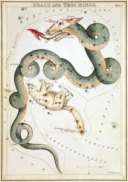
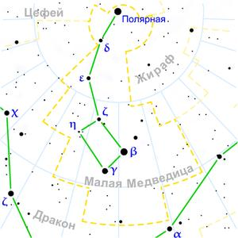

ИсторияПо утверждению Гайя Юлия Гигина, в античную астрономию это созвездие ввёл Фалес Милетский, включив его в каталог звёздного неба Клавдия Птолемея «Альмагест». Греки считали созвездие Большой Медведицы нимфой Каллисто, а Малую Медведицу — её собакой. Согласно греческим мифам, Зевс соблазнил нимфу Артемиды, Каллисто. Она родила сына Аркада. Спасая нимфу и своего ребёнка от мести, Зевс перенёс их на небо, Каллисто — Медведицей, а сына — Волопасом. С Малой Медведицей связана и легенда о рождении Зевса. Чтобы спасти своего сына от отца Кроноса, поедавшего своих детей, богиня Рея унесла Зевса на вершину горы Иды, в священную пещеру, и оставила на попечение нимфам и их матери Мелиссе (или двум нимфам Мелиссе и Киносуре). В благодарность Зевс позднее вознёс на небо Мелиссу в виде Большой и Киносуру в виде Малой Медведицы. В ранних версиях мифа Мелисса и Киносура — медведицы, позже трансформировавшиеся в нимф. На старинных картах Малая Медведица (или только Полярная звезда) иногда именуется Киносурой («хвостом собаки»). Так же эти легенды объясняли почему Медведицы, Большая и Малая, с хвостами: по легенде Зевс сначала превратил нимф в медведей, а потом за хвосты вытащил их на небо, вытянув их. По версии Арата, созвездие именовалось «Малой Колесницей», имея сходство с «Большой Колесницей» (Большой Медведицей). Финикийцы, лучшие мореплаватели ранней античности, использовали созвездие в навигационных целях. Они заметили неподвижность созвездия в северной части неба и использовали этот факт для хождения по Средиземному морю, что позволило им господствовать в морях на протяжении почти 1000 лет. Поэтому Полярную звезду называли «финикийской» или «финикиянкой». Народы Казахстана называли Полярную звезду «железным гвоздём» (Темир-Казык), вбитым в небо, а в остальных звёздах Малой Медведицы видели привязанный к этому гвоздю аркан, надетый на шею Коня (созвездие Большой Медведицы). Арабы принимали звёзды Малой Медведицы за всадников, а персы видели в ней семь плодов финиковой пальмы. Индийцы ассоциировали созвездие с обезьянкой, которая вращается вокруг полюса мира, уцепившись за него хвостом. У римлян носило имя «Спартанские собаки». Юлиус Шиллер в своем атласе «Христианское звёздное небо» 1627 года поместил созвездие под именем «Архангел Михаил». В Древнем Вавилоне созвездие изображали в виде леопарда. О созвездииМа́лая Медве́дица (лат. Ursa Minor) — околополярное созвездие Северного полушария неба. Занимает на небе площадь в 255,9 квадратного градуса и содержит 25 звёзд, видимых невооружённым глазом. В Малой Медведице в настоящее время находится Северный полюс мира, на угловом расстоянии 40' от Полярной звезды. В 2103 году в результате прецессии это расстояние уменьшится до 27'37". НаблюдениеСозвездие видно на всей территории России круглый год. Чтобы найти Полярную звезду (α Малой Медведицы), нужно мысленно продолжить отрезок между Мераком (β Большой Медведицы) и Дубхе (α Большой Медведицы) на расстояние, в 5 раз превышающее его длину. |
 |
|  | |